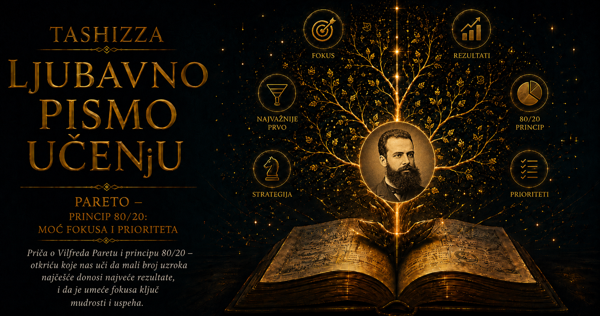

Ljubavno pismo učenju

Postoje mislioci čije ime ostane vezano za jednu formulu toliko jednostavnu da ona s vremenom gotovo zakloni čoveka koji ju je omogućio. Vilfredo Pareto danas živi u izrazima kao što su „Paretov princip”, „Paretova raspodela”, „Paretova efikasnost” i „Paretov optimum”. Njegovo prezime izgovaraju ekonomisti, statističari, inženjeri, menadžeri, programeri i ljudi koji u pretrpanom danu pokušavaju da pronađu mali broj poslova od kojih zavisi najveći deo rezultata. Uz njega se prepričava i slikovita priča o vrtu u kome je primetio da mali deo mahuna daje najveći deo graška. Anegdota je postala toliko omiljena da se često iznosi kao pouzdano zabeležen trenutak otkrića, premda u njegovim izvornim delima i sačuvanoj prepisci nema čvrstog dokaza da ga je upravo brojanje graška dovelo do istraživanja raspodele dohotka. Legenda je opstala jer na neobično lep način izražava ono što je Pareto zaista umeo da vidi: svet u kome se posledice, bogatstvo, uticaj, sposobnosti i moć retko raspoređuju ravnomerno.
Iza tog pogleda stajao je čovek mnogo složeniji od pravila „osamdeset prema dvadeset”. Bio je inženjer koji je postao ekonomista, ekonomista koji se okrenuo sociologiji, vatreni liberal koji je s vremenom izgubio poverenje u političke parole, naslednik plemićkog imena koji je prezirao povlastice i matematički um opsednut ravnotežom. Istovremeno je bio polemičar sklon zajedljivosti, sumnjičavosti i neumoljivim sudovima o protivnicima. Njegova velika unutrašnja tema bila je razlika između onoga što ljudi govore o svojim postupcima i sila koje ih zaista pokreću. U ekonomiji je tražio precizne odnose između izbora i ograničenja, u politici je posmatrao borbu organizovanih manjina za vlast, a u sociologiji je pokušavao da razume zašto ljudi najpre deluju pod uticajem interesa, osećanja, navika i nagona, pa svojim postupcima naknadno daju uzvišena i naizgled logična objašnjenja. Njegova misao kretala se od mehanike čvrstih tela prema mehanici društva, stalno se vraćajući istoj slutnji: ravnoteža postoji, ali je nemirna; raspodela ima svoju strukturu, ali ostaje nejednaka; poredak traje, ali u njemu neprestano kruže moć, bogatstvo i opravdanja.
Rođen je 15. jula 1848. godine u Parizu, usred godine evropskih revolucija, u porodici kojoj politika nije predstavljala udaljenu temu iz novina. Njegov otac Rafaele Pareto, ligurijski plemić i građevinski inženjer, pripadao je krugu italijanskih nacionalista povezanih sa idejama Đuzepea Macinija. Zbog političkih prilika napustio je Đenovu i nastanio se u Francuskoj, gde se oženio Francuskinjom Mari Metenije. Sinu su dali imena koja su odražavala revolucionarnu atmosferu vremena, a koja će posle povratka porodice u Italiju dobiti italijanski oblik: Vilfredo Federiko Damaso Pareto. Njegovo detinjstvo počelo je između jezika, zemalja i identiteta, u kući u kojoj su se spajali francuska kultura, italijanska nacionalna osećanja, plemićko poreklo i tehničko obrazovanje. Ta mešavina ostavila je dubok trag. Pareto će tokom života pisati na italijanskom i francuskom, kretati se između Italije i Švajcarske i zadržati izvesnu udaljenost prema svakoj nacionalnoj ili političkoj pripadnosti koja od čoveka zahteva slepu vernost.
Kada je porodica 1858. godine mogla da se vrati u Italiju, desetogodišnji Vilfredo ušao je u zemlju koja se tek stvarala. Italijansko ujedinjenje još nije bilo završeno; stare države, dinastije, crkveni posedi, regionalne razlike i novi nacionalni ideali sudarali su se u pokušaju da obrazuju modernu državu. Njegov otac radio je kao inženjer i državni službenik, pa je Vilfredo odrastao uz veru da se svet može premeriti, izgraditi i urediti razumom. Obrazovanje koje je stekao bilo je izrazito matematičko i tehničko. Na Politehničkoj školi u Torinu proučavao je matematiku, fiziku i mehaniku, a studije je 1869. godine završio radom o osnovnim načelima ravnoteže čvrstih tela. Naslov tog mladalačkog rada zvuči gotovo proročki, jer će ravnoteža kasnije postati jedan od središnjih pojmova njegove ekonomije. Umesto sila koje deluju na materijalna tela, posmatraće želje, dobra, cene, prihode i ljudske odluke, pokušavajući da ustanovi kako iz njihovog međusobnog delovanja nastaje privredni poredak.
Pareto svoj radni vek nije započeo u tišini univerzitetskog kabineta. Više od dve decenije proveo je u svetu železnice, rudarstva, metalurgije, fabrika, upravnih odbora i državnih propisa. Radio je najpre kao inženjer u železničkoj industriji, zatim u železari San Đovani Valdarno, a potom je obavljao visoke upravljačke poslove u italijanskoj metalurškoj industriji. Ekonomiju je upoznavao kroz cenu uglja, carinske tarife, troškove transporta, plate, ugovore i političke odluke koje su menjale uslove proizvodnje. Video je kako se javni govori o zaštiti nacionalne privrede često završavaju koristima za dobro povezane proizvođače, dok trošak takve zaštite snose potrošači i slabiji učesnici tržišta. Iz tog iskustva razvila se njegova snažna odbojnost prema protekcionizmu i povlasticama koje država dodeljuje odabranim interesnim grupama. U novinskim člancima, predavanjima i javnim raspravama branio je slobodnu trgovinu sa strašću čoveka koji je iza patriotskih obrazloženja prepoznavao sasvim određene materijalne koristi.
Njegova rana politička uverenja bila su liberalna i antiautoritarna. Podržavao je slobodu govora i okupljanja čak i kada su je tražili socijalisti sa čijim se ekonomskim idejama oštro razilazio. U Firenci je učestvovao u javnom životu i govorio protiv militarizma, korupcije, carina i sve snažnijeg državnog uplitanja u privredu. Doživljavao je izborne poraze i gledao kako politički sistem, umesto pažljive rasprave zasnovane na dokazima, nagrađuje koalicije interesa, privlačna obećanja i dobro organizovane pritiske. Njegov temperament nije mu pomagao da poraze ublaži diplomatskim objašnjenjima. Bio je ponosan, oštar i sklon da protivnike optuži za neznanje ili licemerje. U njemu je postojala neobična napetost između moralne strasti sa kojom je branio slobodu i kasnijeg uverenja da moralni govori često služe kao ukras interesima. Upravo će sukob tih dveju strana njegove ličnosti hraniti veliki deo njegovog budućeg rada.
Prekretnica je došla posredstvom Mafea Pantaleonija, briljantnog italijanskog ekonomiste, polemičara i jednog od najvažnijih ljudi u Paretovom intelektualnom životu. Pantaleonijevi radovi o čistoj ekonomiji pokazali su mu da se privredne pojave mogu analizirati matematičkim jezikom, uz jasne pretpostavke i precizno određene odnose. Između njih se razvilo dugo, intenzivno i povremeno burno prijateljstvo, sačuvano u obimnoj prepisci. U tim pismima pojavljuje se Pareto iza završenih knjiga: duhovit i razdražljiv, ranjiv i samouveren, željan priznanja, sklon žalbama na zdravlje, izdavače, političare, kolege i svet koji uporno odbija da se ponaša razumno. Pantaleoni ga je podsticao, povezivao sa časopisima, uvodio u stručne rasprave i ohrabrivao da se potpuno posveti ekonomiji. Njihov odnos pokazuje koliko je i snažnom, samostalnom umu potreban sagovornik sposoban da prepozna njegovu vrednost pre nego što je uoči šira javnost.
Važan učitelj, iako u početku udaljen, bio je i francusko-švajcarski ekonomista Leon Valras. Na Univerzitetu u Lozani Valras je razvijao teoriju opšte privredne ravnoteže, pokušavajući da pokaže kako su cene i količine različitih dobara povezane u sistemu istovremenih odnosa. Pareto je odmah prepoznao duboku srodnost između takvog pristupa i sopstvenog inženjerskog obrazovanja. Kada se Valras povukao sa profesorskog mesta, Pareto je 1893. godine izabran za njegovog naslednika. Imao je četrdeset pet godina, životno doba u kojem su mnogi njegovi savremenici već bili čvrsto ukorenjeni u svojim karijerama, dok je on tek stupao u akademski svet. Taj kasni početak dao mu je posebnu snagu: u učionicu je doneo teorijsko znanje prožeto neposrednim iskustvom industrije, upravljanja, politike i novca.
Preseljenje u Lozanu otvorilo je najplodnije razdoblje njegovog života. U delu Cours d’économie politique, objavljenom u dva toma 1896. i 1897. godine, razvio je matematičku ekonomiju i predstavio istraživanja raspodele dohotka koja će njegovo ime učiniti trajnim. Proučavao je poreske i statističke podatke iz različitih zemalja i razdoblja, rangirao ljude prema visini prihoda i posmatrao kako se smanjuje broj onih koji dostižu veoma visoke iznose. U podacima je uočio pravilnost koja se mogla izraziti matematičkom krivom: veliki deo dohotka pripadao je relativno malom delu stanovništva, dok je ogromna većina raspolagala znatno skromnijim iznosima. Odnos se razlikovao među zemljama i razdobljima, pa čuvena razmera osamdeset prema dvadeset nije predstavljala univerzalnu zapovest koju je Pareto pronašao u prirodi. Njegovo stvarno otkriće bilo je dublje: gornji deo raspodele dohotka pokazivao je snažnu koncentraciju i iznenađujuću matematičku pravilnost, u kojoj su se retke, veoma velike vrednosti izdvajale iz mnoštva malih.
Ta pravilnost istovremeno ga je očaravala i uznemiravala. Liberalni reformatori, socijalisti i konzervativci njegovog doba nudili su različita objašnjenja nejednakosti, dok je Pareto želeo da pre svake političke ocene ustanovi šta podaci zaista pokazuju. U njegovom umu postojala je gotovo asketska potreba da se opis odvoji od želje. Naučnik je, prema njegovom shvatanju, mogao želeti pravednije društvo, ali činjenice nije smeo prilagođavati sopstvenom idealu. Zbog toga je bio sumnjičav prema učenjima koja su obećavala da će promena političkog poretka sama po sebi ukloniti koncentraciju bogatstva. Istorijski podaci navodili su ga na zaključak da se oblici vlasništva, nazivi ustanova i politički programi mogu menjati dok nejednaka raspodela opstaje. Takav zaključak nije svaku nejednakost proglašavao dobrom, opravdanom ili zauvek nepromenljivom; izražavao je Paretovu trajnu sklonost da ispod promenljivih političkih zastava traži tvrdokorne društvene strukture.
Nekoliko decenija kasnije stručnjaci za upravljanje kvalitetom, naročito Džozef Džuran, povezali su Paretovo ime sa opštom idejom da mali broj uzroka često proizvodi veliki deo posledica. Tako je oblikovan savremeni „Paretov princip”, primenjivan na greške u proizvodnji, žalbe kupaca, kvarove, prodaju, softverske probleme i organizaciju vremena. Pravilo osamdeset prema dvadeset postalo je praktična heuristika, približan način da se pažnja usmeri prema najuticajnijim činiocima. Tokom tog prenosa Paretovo složeno istraživanje dohotka pretvoreno je u lako pamtljivu formulu, a priča o mahunama graška pružila joj je prijatnu sliku porekla. Istorijska preciznost zahteva da se popularna legenda razlikuje od dokumentovanog rada, ali njena književna istina ipak nešto otkriva: Pareto je zaista posedovao pogled čoveka koji bi u bašti, fabrici, poreskoj tabeli ili parlamentu zapazio da svet nije sastavljen od jednakih doprinosa.
Njegov doprinos ekonomiji obuhvatio je mnogo više od raspodele prihoda. U Priručniku političke ekonomije pokušao je da privredni izbor opiše bez pretpostavke da se ljudsko zadovoljstvo može precizno meriti poput temperature ili dužine. Za analizu je bilo dovoljno ustanoviti da čovek jednu kombinaciju dobara bira radije od druge i da se njegove sklonosti mogu poređati. Takav pristup učestvovao je u razvoju savremene teorije ordinalne korisnosti i analize krivih indiferencije, premda su ove ideje sazrevale kroz rad više ekonomista. Pareto je proučavao i stanje u kojem se položaj jedne osobe više ne može poboljšati bez pogoršanja položaja neke druge. Taj kriterijum kasnije je dobio naziv Paretova efikasnost ili Paretov optimum i postao jedno od osnovnih oruđa ekonomije blagostanja, teorije odlučivanja i višekriterijumske optimizacije.
U izrazu „Paretova efikasnost” lako je čuti pohvalu pravednom i poželjnom društvenom uređenju, iako sam kriterijum o pravdi ne govori ništa. Društvo u kome jedna osoba poseduje gotovo sve može biti Paretovski efikasno ukoliko bi svaka preraspodela koja pomaže drugima nužno umanjila položaj tog vlasnika. Ovaj primer pokazuje hladnu preciznost Paretovog jezika. Njegovi pojmovi opisuju odnose koje treba razumeti pre moralne i političke odluke, ali ne određuju ciljeve kojima društvo treba da teži. Upravo je ta uzdržanost postala i snaga i izvor nelagodnosti njegove ekonomije. Pareto je nauci želeo da oduzme mogućnost da sopstvene vrednosti prikazuje kao prirodne zakone, ostavljajući otvoreno teško pitanje ko će, na osnovu kojih merila i uz kakvu odgovornost odlučiti kakvo društvo smatramo dobrim.
Njegov privatni život tokom tih godina bio je daleko od ravnoteže koju je tražio u teoriji. Posle smrti roditelja napustio je industrijsku karijeru i 1889. godine oženio se Aleksandrinom Bakunjinom, mladom Ruskinjom skromnog porekla. Brak je u početku predstavljao raskid sa očekivanjima njegovog društvenog sloja i deo nove životne etape. Vremenom se odnos raspao, a Aleksandrina ga je početkom dvadesetog veka napustila i otišla sa mlađim čovekom zaposlenim u njihovom domaćinstvu. Razvod i mogućnost novog braka bili su opterećeni složenim pravnim okolnostima, jer tadašnje italijansko pravo nije jednostavno dopuštalo razvod. Povređenost, usamljenost i osećanje izdaje mogu se naslutiti u njegovim pismima, premda je lične emocije često zaklanjao ironijom, zajedljivim opaskama i žalbama na svet koji ga je razočarao.
U njegov život potom je ušla Žan Reži, Francuskinja koja mu je postala odana saputnica, saradnica i čuvar svakodnevice. Sa njom se nastanio u Selinjiju, mirnom mestu na obali Ženevskog jezera, u kući koja mu je pružala udaljenost od univerzitetskih sukoba i političke vreve. Pareto je voleo životinje, naročito mačke, i u njegovom domu bilo ih je mnogo. Ta nežnost prema životinjama stoji u zanimljivom kontrastu sa njegovim često surovim sudovima o ljudima. Čovek koji je u javnim polemikama umeo da bude leden i podrugljiv u privatnom prostoru pokazivao je snažnu potrebu za privrženošću, rutinom i tišinom. Patio je od zdravstvenih tegoba, radio u naletima, obilno se dopisivao i sve više povlačio u svet knjiga, rukopisa i posmatranja društva sa udaljenosti koja mu je donosila analitičku jasnoću, ali je istovremeno pojačavala njegovu mizantropiju.
Oko 1900. godine njegovo interesovanje počelo je da se pomera od čiste ekonomije prema široj nauci o društvu. Razlog je bio istovremeno intelektualan i ličan. Matematička ekonomija mogla je uspešno analizirati izbore ljudi koji dosledno povezuju sredstva i ciljeve, dok politika koju je Pareto gledao nije ličila na tako uređen svet. Ljudi su glasali protiv sopstvenih materijalnih interesa, prihvatali žrtve zbog zastave, vere ili časti, mrzeli protivnike koje nikada nisu upoznali i podržavali mere čije posledice nisu razumeli. Političke stranke menjale su argumente dok su njihovi interesi ostajali isti, revolucionari su po osvajanju vlasti razvijali navike prethodnih vladara, humanitarne parole pratile su surove obračune, a sebični potezi dobijali su plemenita obrazloženja. Pareto je zaključio da se ljudsko društvo ne može razumeti ako se čovek posmatra isključivo kao dosledan računar koristi.
U njegovom najvećem sociološkom delu, Traktatu opšte sociologije, objavljenom 1916. godine, pojavila se nit koja najpotpunije izražava njegovu ličnu filozofiju: ljudi veoma često postupaju nelogički, a zatim stvaraju logična objašnjenja svojih postupaka. Trajnije pokretačke sklonosti nazivao je „reziduima”, dok je promenljiva opravdanja, teorije i govore označavao kao „derivacije”. Time nije poricao ljudsku sposobnost razumnog mišljenja. Ukazivao je na ogroman prostor društvenog života koji nastaje iz osećanja, potrebe za pripadanjem, navike, straha, ambicije, nagona za stvaranjem novih kombinacija i potrebe za očuvanjem postojećeg poretka. Razum u takvim okolnostima često dolazi kao vešt advokat, sposoban da odbrani odluku donesenu mnogo dublje i ranije.
Pareto je u proučavanju razlike između pokretača i opravdanja bio ispred mnogih savremenika. Danas, kada se govori o racionalizaciji, kognitivnim pristrasnostima, grupnom identitetu i emocionalnim osnovama političkog mišljenja, njegova intuicija deluje zapanjujuće moderno. Njegov jezik je, međutim, bio težak, klasifikacije opširne, a primeri često obojeni polemičkim ukusom autora koji je uživao da pokaže kako se iza uzvišenih reči kriju obične strasti. Slabost takvog pogleda otkrivala se u njegovoj sklonosti da, razotkrivajući tuđe iluzije, povremeno potceni iskrenost, saosećanje i sposobnost ljudi da učenjem menjaju sebe. Kada čovek dugo posmatra licemerje, raste iskušenje da svaku vrednost protumači kao masku, a Pareto se tokom poznih godina često približavao toj granici.
Iz njegovog proučavanja društva razvila se i teorija elita. Smatrao je da se u svakoj oblasti izdvaja manjina ljudi koji postižu naročite rezultate, stiču ugled i bogatstvo, raspolažu organizacionom moći ili razvijaju izuzetnu sposobnost uticaja na druge. U političkom životu jedan deo te manjine obrazuje vladajuću elitu. Društva se, prema njegovom mišljenju, ne kreću pravolinijski od vladavine manjine prema potpunoj i neposrednoj vladavini svih građana. Stare elite slabe, zatvaraju se, gube odlučnost ili sposobnost prilagođavanja, dok nove grupe rastu, organizuju se i postepeno zauzimaju njihovo mesto. Taj neprekidni proces smenjivanja, prodora i propadanja Pareto je nazivao „kruženjem elita”.
U slikovitim analizama razlikovao je elite koje se oslanjaju na lukavstvo, pregovaranje, kombinovanje i prilagođavanje od onih koje svoju vlast zasnivaju na sili, postojanosti, disciplini i tradiciji. Za prve je koristio drevnu sliku lisica, a za druge lavova. Društveni poredak postaje nestabilan kada u vladajućem sloju potpuno preovlada samo jedan tip ponašanja. Lisice mogu postati vešte u manipulaciji i sklapanju sporazuma, ali izgubiti sposobnost da odbrane sistem, dok lavovi mogu posedovati odlučnost i snagu, a ostati kruti i slepi pred promenama. Stabilnost, prema Paretu, zahteva kruženje sposobnosti i karaktera, dok zatvorena elita koja onemogućava priliv novih ljudi u sebi priprema sopstveni pad. U ovoj teoriji ponovo se pojavila njegova opsesija nejednakom raspodelom: politička moć, poput prihoda, sabira se u rukama manjine, ali nijedna manjina ne uspeva da je zadrži zauvek.
Njegova slika istorije bila je ciklična i duboko skeptična prema zamisli o neprekidnom napretku. Odrastao je uz ideale nacionalnog oslobođenja i građanske slobode, a zatim gledao kako se nova italijanska država opterećuje korupcijom, klijentelizmom, carinama, militarizmom i represijom. Posmatrao je i kako socijalistički pokreti, nastali u ime radnika i jednakosti, razvijaju sopstvene hijerarhije, vođe i dogme. Na osnovu toga zaključio je da se elite smenjuju dok težnja organizovane manjine da upravlja većinom opstaje. Takva misao može sačuvati čoveka od političke naivnosti, ali ga takođe može zatvoriti u uverenje da plemenitost, solidarnost i reforma predstavljaju samo prolazne ukrase trajne borbe za moć. U Paretu su lucidnost i razočaranje rasli zajedno, hraneći jedno drugo.
Njegov odnos prema demokratiji zato je ostao napet i protivurečan. Cenio je slobodu i protivio se mnogim oblicima prinude, ali nije verovao romantičnim predstavama o narodu koji vlada potpuno razumno i neposredno. Smatrao je da i demokratije imaju elite, čija vlast počiva na izborima, novinama, finansiranju, partijskim organizacijama, ubeđivanju i stvaranju saglasnosti. Politički jezik o volji naroda posmatrao je kao jednu od mogućih „derivacija” kojima vladajuće grupe opravdavaju svoju moć. Iza tog nepoverenja ostavio je pitanje koje je i danas neprijatno i dragoceno: kada se vlast poziva na opšte dobro, ko tačno donosi odluke, ko od njih ostvaruje korist, ko snosi posledice i kojim se pričama traži pristanak ostalih?
Poslednje godine njegovog života poklopile su se sa ratom, društvenim nemirima i usponom fašizma u Italiji. Pareto je pozdravio slabljenje parlamentarnog sistema koji je dugo prezirao, a neke početne poteze Benita Musolinija tumačio je kao obračun sa poretkom koji je smatrao licemernim i neefikasnim. Musolinijev režim nastojao je da u njemu pronađe uglednog prethodnika teorije elita, dok je Pareto 1923. godine imenovan za senatora Kraljevine Italije. Odnos njegove misli prema fašizmu ipak izmiče jednostavnoj etiketi. Umro je svega nekoliko meseci posle tog imenovanja, pre nego što je režim razvio svoj puni diktatorski oblik, a u poznim tekstovima i dalje je upozoravao na opasnosti cenzure, gušenja slobode i preterane državne kontrole. Njegov elitizam i prezir prema parlamentarnim iluzijama mogli su poslužiti kao intelektualno oružje autoritarne politike, dok su odbrana slobode mišljenja i neprijateljstvo prema državnom dirigovanju ostajali u dubokoj napetosti sa takvom vlašću.
Ova protivurečnost važna je za razumevanje Paretovog karaktera. Čitavog života raskrinkavao je opravdanja moći, a ipak je u starosti potcenio opasnost nove moći koja je obećavala odlučnost, disciplinu i obnovu. Toliko dugo je upozoravao na slabost političkih „lisica” da je mogao osetiti izvesno olakšanje kada su se pojavili ljudi koji su želeli da izgledaju kao „lavovi”. Njegova teorija pomogla mu je da vidi zašto se režimi menjaju, ali ga nije potpuno zaštitila od sopstvenog razočaranja, emocija i želje da se prezreni poredak konačno uzdrma. Upravo na tom mestu veliki analitičar nelogičnih postupaka postaje dirljivo ljudski: ni on nije stajao izvan sila koje je opisivao, niti je umeo da svaku sopstvenu nadu podvrgne istoj strogosti sa kojom je ispitivao tuđa uverenja.
Žan Reži ostala je uz njega tokom bolesti i poslednjih godina. Pošto su pravne prepreke konačno uklonjene, venčali su se neposredno pred njegovu smrt. Pareto je preminuo 19. avgusta 1923. godine u Selinjiju, u svojoj sedamdeset šestoj godini. Iza njega su ostale knjige iz ekonomije, sociologije i političke teorije, hiljade stranica prepiske, mnoštvo polemika i nekoliko pojmova koji su ušli u gotovo svakodnevni jezik. Njegova kuća sa mačkama, rukopisima i pogledom na Ženevsko jezero bila je poslednje utočište čoveka koji je želeo da društvo posmatra hladno, iako je prema njemu često reagovao vrelo, povređeno i strasno.
Pareto se među savremenicima izdvajao retkom sposobnošću prelaska između različitih svetova. Iz mehanike je poneo pojam ravnoteže, iz industrije neposredno iskustvo interesa, iz ekonomije matematičku disciplinu, iz političkih borbi nepoverenje prema parolama, a iz ličnih razočaranja osećanje da ljudske odluke imaju skrivene dubine. Njegovo delo ne obrazuje jedan potpuno zatvoren sistem, već čuva trag uma koji je stalno menjao predmet istraživanja, a nikada nije napustio osnovno pitanje: kako iz mnoštva pojedinačnih sila nastaje poredak u kojem se neke posledice sabiraju, određene grupe uzdižu, stare elite propadaju, dok brojna objašnjenja služe kao naknadno postavljena dekoracija?
Savremena upotreba Paretovog principa često je vedra i praktična. Učimo da pronađemo nekoliko zadataka koji nose najveću vrednost, nekoliko uzroka koji stvaraju većinu kvarova ili mali broj odluka koje menjaju tok projekta. Takva primena može biti dragocena sve dok se približan obrazac ne pretvori u magični zakon. Odnos osamdeset prema dvadeset ne pojavljuje se u svakoj pojavi, niti svaka neravnomerna raspodela pripada precizno definisanoj Paretovoj raspodeli. Ljudi lako pronalaze pravilnosti i tamo gde ih nema, naročito kada su brojevi dovoljno elegantni da se pamte i prenose. Najvernije Paretovom duhu bilo bi upravo proveravanje: prikupiti podatke, posmatrati njihov stvarni raspored, razlikovati veliku posledicu od učestalog uzroka i tek tada odlučiti gde treba usmeriti pažnju.
Njegovo nasleđe nosi i mnogo ozbiljniju pouku. Nejednaka raspodela prevazilazi tehniku produktivnosti, jer govori o bogatstvu, uticaju, znanju, vidljivosti i životnim mogućnostima. Mali broj ljudi može posedovati veliki deo resursa, mali broj institucija može oblikovati javni govor, dok mali broj odluka može odrediti život miliona. Paretov pogled poziva nas da iza proseka potražimo raspodelu, iza formalne jednakosti stvarnu koncentraciju, a iza političkog objašnjenja interese, osećanja i organizovanu moć. Njegova biografija istovremeno upozorava da sumnja prema iluzijama može proizvesti sopstvenu iluziju ukoliko čovek počne da veruje da su sve vrednosti samo maske, svi ideali sredstva manipulacije, a svaka solidarnost prikriveni interes.
Zato je Vilfredo Pareto važan i izvan ekonomskih udžbenika. On nas uči da svet ne daje svemu jednaku težinu, da uzroci i posledice često žive u nesrazmeri i da društveni poredak treba posmatrati sa pažnjom inženjera, disciplinom statističara i oprezom psihologa. Njegov život pokazuje i cenu takvog pogleda. Ko stalno primećuje skrivene interese lako gubi poverenje, a ko neumorno raskrinkava opravdanja može prevideti da ljudi ponekad zaista deluju iz ljubavi, dužnosti, saosećanja ili hrabrosti. Najplodniji susret sa Paretom zato podrazumeva usvajanje njegove budnosti bez preuzimanja njegovog pesimizma. Zrno graška iz popularne legende tada postaje simbol nečeg većeg: sposobnosti da u sasvim običnom prizoru naslutimo neravnomernu arhitekturu sveta, a zatim prikupimo dovoljno strpljenja, znanja i intelektualnog poštenja da proverimo šta smo zaista videli.